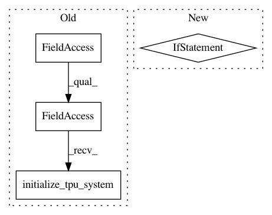

b1d9ac5b8b4d9e47ae146c77347d99e28e9a2701,official/transformer/v2/transformer_main.py,TransformerTask,__init__,#TransformerTask#Any#,88
Before Change
if params["use_tpu"]:
cluster_resolver = tf.distribute.cluster_resolver.TPUClusterResolver(
flags_obj.tpu or "local")
tf.tpu.experimental.initialize_tpu_system(cluster_resolver)
self.distribution_strategy = tf.distribute.experimental.TPUStrategy(
cluster_resolver)
else:
self.distribution_strategy = distribution_utils.get_distribution_strategy(
After Change
distribution_strategy=flags_obj.distribution_strategy,
num_gpus=num_gpus,
tpu_address=flags_obj.tpu or "")
if self.use_tpu:
if not params["static_batch"]:
raise ValueError("TPU requires static batch for input data.")
else:
print("Running transformer with num_gpus =", num_gpus)
if self.distribution_strategy:
print("For training, using distribution strategy: ",
self.distribution_strategy)
else:
In pattern: SUPERPATTERN
Frequency: 3
Non-data size: 4
Instances
Project Name: tensorflow/models
Commit Name: b1d9ac5b8b4d9e47ae146c77347d99e28e9a2701
Time: 2019-08-16
Author: hongkuny@google.com
File Name: official/transformer/v2/transformer_main.py
Class Name: TransformerTask
Method Name: __init__
Project Name: tensorflow/models
Commit Name: 15db2195e861fbc03a37f7cfe3382fa72b05f230
Time: 2019-05-30
Author: saberkun@users.noreply.github.com
File Name: official/bert/run_pretraining.py
Class Name:
Method Name: main
Project Name: HyperGAN/HyperGAN
Commit Name: 022034282fc8ca8694ceffc2aec711c9376a3e37
Time: 2019-08-13
Author: mikkel@255bits.com
File Name: hypergan/cli.py
Class Name: CLI
Method Name: train_tpu